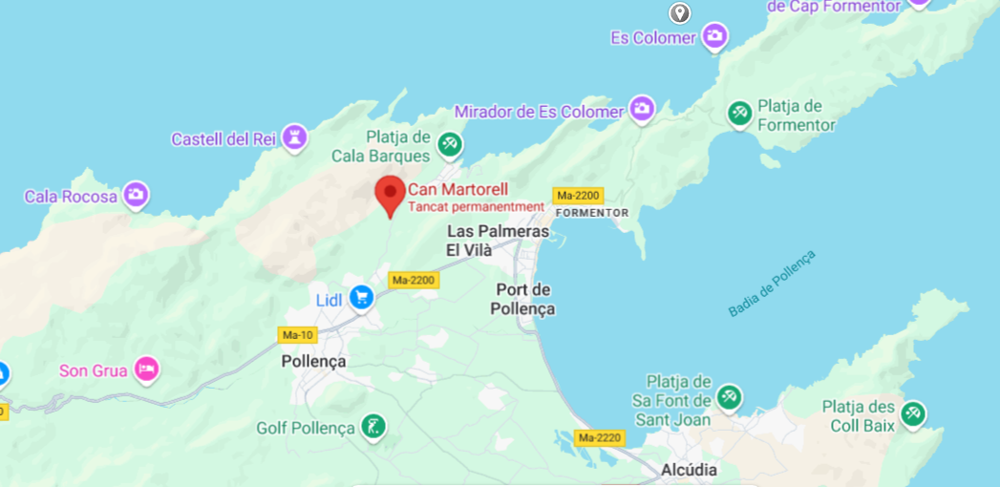

Descripció
La Cova de Can Martorellet és una cova funerària situada a Santanyí, Mallorca. Aquesta cova prehistòrica va ser utilitzada per l'enterrament de diversos individus i conté restes humanes i objectes cerimonials importants per a la comprensió de les pràctiques funeràries de les primeres comunitats balears.
Història i Importància
Es creu que la Cova de Can Martorellet va ser utilitzada entre el Neolític i l'Edat del Bronze. Les restes trobades en aquest jaciment mostren una societat amb pràctiques funeràries complexes, amb una relació estreta amb els morts i rituals associats a la mort.
Ubicació
La cova està ubicada a prop de la localitat de Santanyí, al sud de Mallorca, en un entorn natural que ofereix vistes espectaculars de la costa.

Imatges